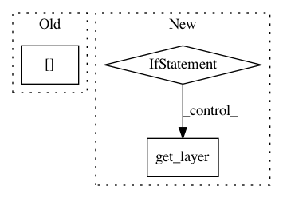

5c3de2518362675e14b15f87044742a94b816ef2,snntoolbox/simulation/target_simulators/loihi_target_sim.py,SNN,add_layer,#SNN#Any#,104
Before Change
// Convert weights to integers.
if len(layer.weights):
weights, biases = layer.get_weights()
num_weight_bits = eval(self.config.get(
"loihi", "connection_kwargs"))["numWeightBits"]
weights, biases = to_integer(weights, biases, num_weight_bits)
spike_layer.set_weights([weights, biases])
self._previous_layer_name = layer.name
After Change
weights, biases = layer.get_weights()
weights, biases = to_integer(weights, biases, self.num_weight_bits)
if "Flatten" in self._previous_layer_name:
pl = self.parsed_model.get_layer(self._previous_layer_name)
shape = pl.input_shape[1:]
permutation = np.ravel(np.reshape(
np.arange(int(np.prod(shape))), shape, "F"), "C")
weights = weights[permutation]
spike_layer.set_weights([weights, biases])
elif "AveragePooling" in get_type(layer):
weights, biases = spike_layer.get_weights()
In pattern: SUPERPATTERN
Frequency: 3
Non-data size: 3
Instances
Project Name: NeuromorphicProcessorProject/snn_toolbox
Commit Name: 5c3de2518362675e14b15f87044742a94b816ef2
Time: 2019-08-20
Author: bodo.rueckauer@intel.com
File Name: snntoolbox/simulation/target_simulators/loihi_target_sim.py
Class Name: SNN
Method Name: add_layer
Project Name: rwth-i6/returnn
Commit Name: ea35a10efad0b27594f97bea2bf732a4910fa7d8
Time: 2021-03-24
Author: albzey@gmail.com
File Name: returnn/tf/network.py
Class Name: TFNetwork
Method Name: get_layer
Project Name: fizyr/keras-retinanet
Commit Name: b1d4e0ff6f30abb4299e17b50c33bad909b8f16a
Time: 2018-04-13
Author: j.c.gaiser@delftrobotics.com
File Name: keras_retinanet/models/retinanet.py
Class Name:
Method Name: retinanet_bbox